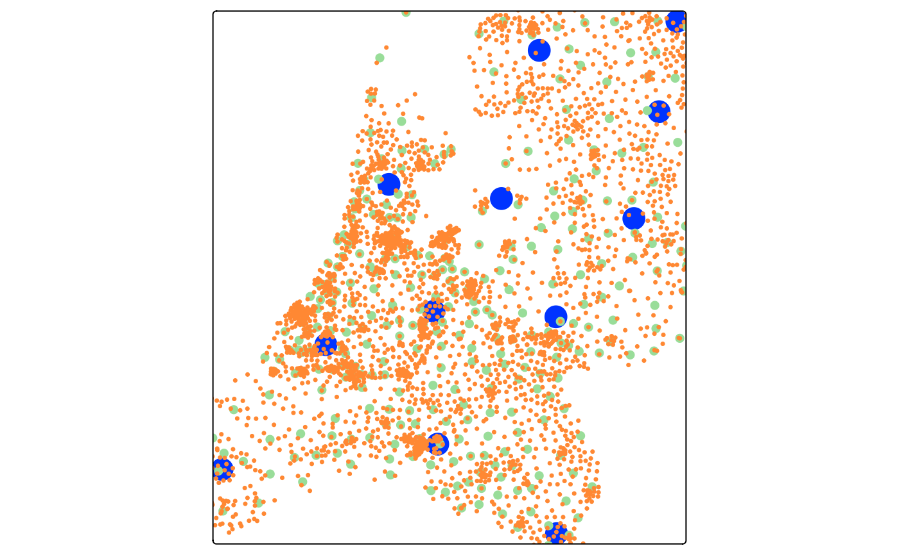
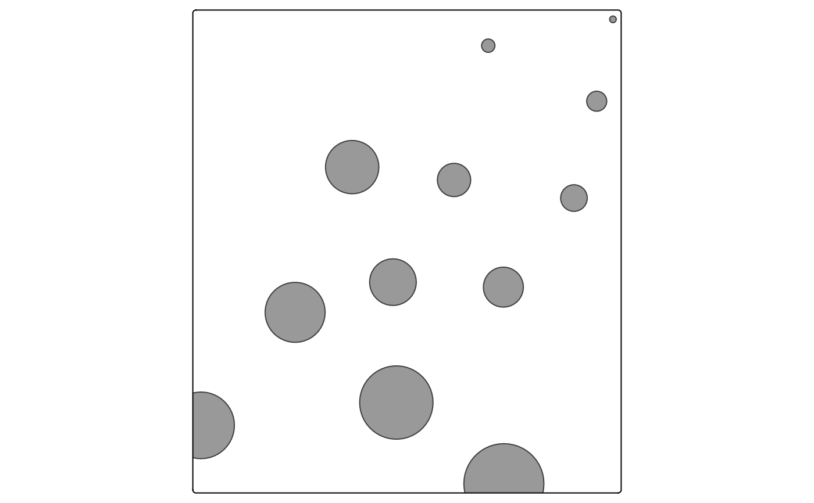

Map layer that draws circles with geographically fixed radii — i.e. the
radius is expressed in meters and the circles scale with zoom in interactive
(view) mode. This is in contrast to tm_bubbles(), where the symbol size
is a fixed number of screen pixels.
Usage
tm_circles(
size = tm_const(),
size.scale = tm_scale(),
size.legend = tm_legend(),
size.chart = tm_chart_none(),
size.free = NA,
fill = tm_const(),
fill.scale = tm_scale(),
fill.legend = tm_legend(),
fill.chart = tm_chart_none(),
fill.free = NA,
col = tm_const(),
col.scale = tm_scale(),
col.legend = tm_legend(),
col.chart = tm_chart_none(),
col.free = NA,
lwd = tm_const(),
lwd.scale = tm_scale(),
lwd.legend = tm_legend(),
lwd.chart = tm_chart_none(),
lwd.free = NA,
lty = tm_const(),
lty.scale = tm_scale(),
lty.legend = tm_legend(),
lty.chart = tm_chart_none(),
lty.free = NA,
fill_alpha = tm_const(),
fill_alpha.scale = tm_scale(),
fill_alpha.legend = tm_legend(),
fill_alpha.chart = tm_chart_none(),
fill_alpha.free = NA,
col_alpha = tm_const(),
col_alpha.scale = tm_scale(),
col_alpha.legend = tm_legend(),
col_alpha.chart = tm_chart_none(),
col_alpha.free = NA,
plot.order = tm_plot_order("size"),
zindex = NA,
group = NA,
group.control = "check",
popup = tm_popup(),
popup.vars = NA,
popup.format = tm_label_format(),
hover = NA,
id = "",
blend = "over",
options = opt_tm_circles(),
...
)
opt_tm_circles(
points_only = "ifany",
point_per = "feature",
on_surface = FALSE
)Arguments
- size, size.scale, size.legend, size.chart, size.free
Visual variable that determines the size. See details. Unit: Meters. Accepts a plain numeric vector (values already in meters) or a
unitsobject from the units package (any linear unit, e.g.units::as_units(50, "km")), which is converted to meters automatically. Unit: Meters. Accepts a plain numeric vector (values already in meters) or aunitsobject from the units package (any linear unit, e.g.units::as_units(50, "km")), which is converted to meters automatically.- fill, fill.scale, fill.legend, fill.chart, fill.free
Visual variable that determines the fill color. See details. Unit: Color – a color name, hex string, or (when mapped) a palette name.
- col, col.scale, col.legend, col.chart, col.free
Visual variable that determines the color. See details. Unit: Color – a color name, hex string, or (when mapped) a palette name.
- lwd, lwd.scale, lwd.legend, lwd.chart, lwd.free
Visual variable that determines the line width. See details. Unit: Base R line-width units; 1 lwd is approx. 0.75 pt at 96 dpi. Controlled by
values.scale.- lty, lty.scale, lty.legend, lty.chart, lty.free
Visual variable that determines the line type. See details. Unit: Integer (1-6) or name: "solid", "dashed", "dotted", "dotdash", "longdash", "twodash".
- fill_alpha, fill_alpha.scale, fill_alpha.legend, fill_alpha.chart, fill_alpha.free
Visual variable that determines the fill color transparency. See details. Unit: Proportion – numeric 0-1 (0 = fully transparent, 1 = fully opaque).
- col_alpha, col_alpha.scale, col_alpha.legend, col_alpha.chart, col_alpha.free
Visual variable that determines the color transparency. See details. Unit: Proportion – numeric 0-1 (0 = fully transparent, 1 = fully opaque).
- plot.order
Specification in which order the spatial features are drawn. See
tm_plot_order()for details.- zindex
Controls the stacking order of map layers. Should be set to a value above 400. By default, layers are stacked in call order, starting at 401. See details.
- group
Name of the group to which this layer belongs. This is only relevant in view mode, where layer groups can be switched (see
group.control)- group.control
In view mode, the group control determines how layer groups can be switched on and off. Options:
"radio"for radio buttons (meaning only one group can be shown),"check"for check boxes (so multiple groups can be shown), and"none"for no control (the group cannot be (de)selected).- popup
popup specification for
"view"mode, the output oftm_popup(). It determines the data variables shown in the popup table, the popup title, and (in the future) the popup layout. This replaces the deprecated argumentspopup.varsandpopup.format.- popup.vars
(Deprecated.) Use
popupwithtm_popup()instead (via itsvarsargument). Names of data variables that are shown in the popups in"view"mode. Setpopup.varstoTRUEto show all variables in the shape object. Setpopup.varstoFALSEto disable popups. Setpopup.varsto a character vector of variable names to show those variables in the popups. The default (NA) depends on whether visual variables (e.g.fill) are used. If so, only those are shown. If not, all variables in the shape object are shown.- popup.format
(Deprecated.) Use
popupwithtm_popup()instead (via itsformatargument). List of formatting options for the popup values. Output oftm_label_format(). Only applicable for numeric data variables. If one list of formatting options is provided, it is applied to all numeric variables ofpopup.vars. Also, a (named) list of lists can be provided. In that case, each list of formatting options is applied to the named variable.- hover
name of the data variable that specifies the hover labels (view mode only). Set to
FALSEto disable hover labels. By defaultFALSE, unlessidis specified. In that case, it is set toid,- id
name of the data variable that specifies the indices of the spatial features. Only used for
"view"mode.- blend
Compositing operator for layer blending. Default
"over"applies no blending. See the "Layer blending" section for the supported values.- options
Options passed on to
opt_tm_circles().- ...
To catch deprecated arguments from version < 4.0.
- points_only
Should only point geometries of the shape object be plotted? Default
"ifany"meansTRUEwhenever the geometry collection contains points.- point_per
How spatial points are generated for non-point geometries. One of
"feature"(one point per feature, default),"segment"(one per sub-feature), or"largest"(only the largest sub-feature).- on_surface
For polygon inputs, should the centroid be guaranteed to lie on the surface? If
TRUE(slower), centroids outside the polygon are replaced viasf::st_point_on_surface().
Details
Supported visual variables: fill (fill colour), col (border colour),
size (radius in meters), lwd (line width), lty (line type),
fill_alpha (fill transparency), col_alpha (border transparency).
See also
tm_bubbles()for screen-fixed proportional circles (pixel radius).tm_symbols()for the general symbol layer with configurable shapes.tm_scale_asis()to pass data values directly as metre radii.
Examples
## Three concentric layers of geographic circles at different administrative
## levels, each with a fixed radius that corresponds to a real-world distance.
## Because the radius is in meters the circles scale with zoom in view mode.
tm_shape(NLD_prov) +
tm_circles(size = 5000, fill = "#0033ff", col = NULL) +
tm_shape(NLD_muni) +
tm_circles(size = 2000, fill = "#99dd99", col = NULL) +
tm_shape(NLD_dist) +
tm_circles(size = 1000, fill = "#ff8833", col = NULL)
#> [popup] Both `popup` and the deprecated `popup.vars`/`popup.format` were
#> supplied to `tm_circles()`.
#> ℹ The deprecated arguments are ignored in favour of `popup`.
#> This message is displayed once every 8 hours.

## Use a units object — any linear unit is accepted and converted to meters
NLD_prov$one_mile <- units::as_units(1:12, "mi")
tm_shape(NLD_prov) +
tm_circles(size = "one_mile", size.scale = tm_scale_asis())
